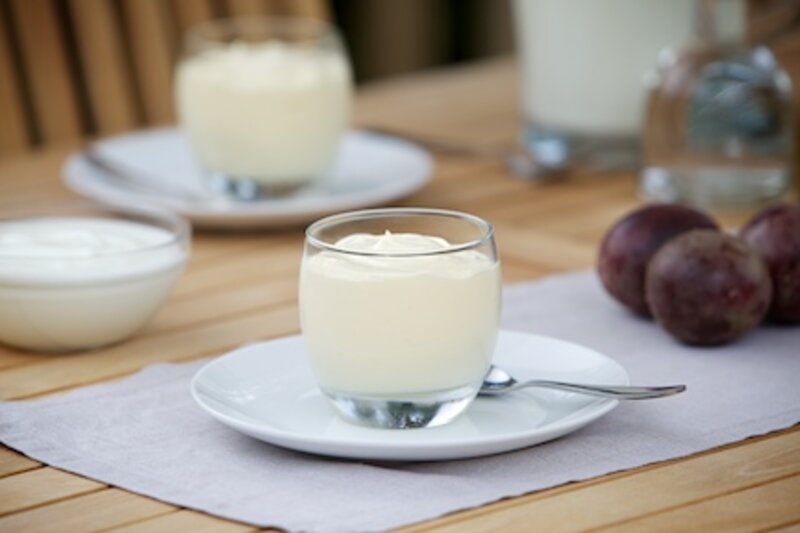

Yogurt
'Inflate' your product's ego ... using Hahn know-how
Cultured dairy products are extremely popular and are seen as healthy and nutritious desserts. They are available in a wide range of different formats, in terms of texture, fat content.

Cultured dairy products are extremely popular and are seen as healthy and nutritious desserts. They are available in a wide range of different formats, in terms of texture, fat content, sweetener type, flavour and packaging formats.
Whipped acid dairy products include yogurt, fromage frais and creme fraiche. After fermentation and cooling, the yogurt is typically aerated using continuous aeration equipment such as Mondo. This involves injecting a controlled volume of inert gas (nitrogen) to create a foam in the product.
Covered in this application
- New rheological (eating) properties, from fun to premium
- Texture and flavour delivery improvement
- Light or low fat options
- Lower product costs
How we can help
Three ways into this product.
Whether you are building it new, fixing something that goes wrong in production, or looking for cost in the recipe.
New product
KaTech Katharina Hahn will help you develop the new whipped yogurt product you are looking for - one which will help you win business with retailers and succeed in the market place.
There are a number of ways we can develop your recipe and find the right mix of functional ingredients you are looking for.
We'll work with you to consider a number of factors including:
- The fat content required in the product
- Any restrictions on ingredients that can be used - we can help you find alternatives
- The type of texture required: whether soft or firm, light or heavy
- The process method. This can be either an all in one process, with required ingredients processed in the yogurt base, or a hot stabiliser solution added to the base yogurt
- Fruit - how much needs to be added and at what stage in the process.
Troubleshooting
A number of potential problems can arise in the production of whipped yogurt and KaTech Katharina Hahn's skilled technical team has the expertise to help you overcome these.
For example, where the yogurt's fat source is from a homogenised, cultured dairy product, the product can be difficult to whip. A number of solutions are available and we can work with you to find the best one for you. If there is no fat present, it is possible to aerate the yogurt using whipping proteins. With low levels of fat, emulsifiers are required to incorporate the gas in a fine, regular and highly stable air structure that does not collapse. With high levels of fat, the milk fat will whip on its own, with assistance.
Gelatine can also be used to give the required level of set to a mousse or fool.
We can also recommend starches and stabilisers to provide the required mouthfeel and body and to prevent serum loss.
Cost optimisation
Whipping yogurt offers a number of opportunities to reduce cost. We can help you cost optimise your recipe to ensure your profit margins are kept as high as possible.
The main commercial benefits of whipping come from the addition of air as an ingredient - which for obvious reasons isn't one with associated high costs. Depending upon the recipe and whipping equipment available it is possible to obtain up to 200% over-run (air) in the whipped yogurt product.
Our technical team will be happy to advise you on the best way to keep your recipe and production costs down.
Yogurt
More in this area.
Drinking yogurt
Drinking yogurt is categorised as a stirred yogurt of low viscosity, which is.
02Fruited yogurt
Fruit or flavouring is used to offset yogurt's natural sourness and to create a.
03Greek style yogurt
Greek style yogurt has a long history and has been dubbed the 'food of the Gods'.
04Layered yogurt
Frozen yogurt has grown in popularity in recent years, driven by the dairy.
05Natural stirred yogurt
It is likely that natural stirred yogurt first emerged spontaneously - with goats.
06Set yogurt
The fermentation of set yogurt takes place in the retail container, although the.
Bring us the product.
Tell us what it has to do, how it is produced and where it currently fails. We will tell you what is possible.